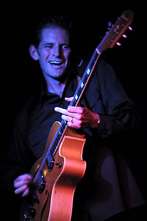

Гитарист 'L.A. Holmes' не переигрывает и не пытается перегрузить слушателя, демонстрируя свой уникальный блюзовый звук в укороченных песнях.Можно сказать, что Холмстром здорово пошутил, назвав свой новый сольный альбом "Gonna Get Wild." Несмотря на то, что гитарист Rod Piazza & the Mighty Flyers действительно «отвязался» по случаю, Холмстром может служить идеалом сдержанности, предпочитая демонстрировать минимум эмоций.
Другими словами, Холмстром может, но это не значит, что он повернет ручку громкости до предела и станет выдавать одно соло за другим в духе Stevie Ray Vaughan. Его музыкальное Я скорее состоит в том, чтобы добиваться своего собственного характерного звучания.
«На самом деле, я уделяю особое внимание звуку» - говорит Холмстром по телефону из студии в Лос-Анжелесе, где он продюсирует альбом Эрика Либермана, гитариста из Сан-Диего. «Если вы послушаете Pee Wee Crayton, T-Bone Walker, Lester Young - гитаристов или саксофонистов - не важно, кого, поймете, что все дело в звуке. Звук имеет огромное значение, потому, когда я слышу кого-нибудь из них, я моментально узнаю, кто именно играет.»
«По большей части мой подход состоит в том, чтобы не переигрывать и не перегружать слушателя» - добавляет он. «Иногда, конечно, нужно бывает "раскачать" усилитель, чтобы получить дисторшн в звуке, как, например, в заглавной песне моего нового альбома. Но даже в таких случаях я стремлюсь к более теплому, негромкому звучанию».
Холмстром также предпочитает короткие песни, что вовсе не характерно для современного блюза. Средняя длительность песен с его нового альбома «Gonna Get Wild» (Tone Cool Records) - три с половиной минуты.
«Иногда нужно самоутвердиться тем, что ты НЕ играешь» говорит Холмстром, которому исполнится 35 в следующем месяце. «Некоторые блюзовые песни, которые слышны по радио, звучат по шесть, семь, восемь минут - это слишком долго. Послушайте 'Blues After Hours' Pee Wee Crayton, или возьмите любую классическую песню 40-ых или 50-ых и вы обнаружите, что все они длятся около трех минут.
« Мне не всегда удается добиться такой краткости, но я стремлюсь к ней, потому что думаю, что она производит наибольший эффект. Если ты не можешь сказать, что хочешь, за такой промежуток времени, наверное, не стоит и пытаться говорить. Пространные соло - это потакание своим желаниям, они только утомляют аудиторию».
Такой минималистский подход напрямую соотносится и с тем, как Холмстром пишет песни. Все песни с альбома "Gonna Get Wild", написанные либо самим Холмстромом, либо в соавторстве с ним, - песни без премудростей о человеческих взаимоотношениях. Холмстром считает, что именно по оригинальному авторскому материалу нужно судить о музыканте, принадлежащем к блюзовому сообществу.
« Я пытаюсь не мудрствовать в своих песнях, предпочитаю простые прямые слова, то, что подсказано моим собственным опытом, то, что мне кажется правдивым» - говорит он. «Я не буду писать песен о работе на плантациях или политических песен, скажем, о войне в Боснии. Я предоставлю это бардам, у которых это получается хорошо».
«Знаете, блюз не был видом искусства, когда он только появился. Просто Lightnin' Hopkins посиживал в компании подвыпивших приятелей, пытаясь забыть о тяжелом рабочем дне».
«Ты изучаешь составные части и словарь идиом, здесь все в порядке» - продолжает он. «А когда начинаешь делать свои вещи, когда заявляешь о себе, именно тогда сами старики похлопывают тебя по спине и говорят, «Ну вот, теперь ты в деле».
Детство Холмстрома прошло в городке Fairbanks на Аляске, где он познакомился с музыкой через пластинки своего отца - в коллекции были записи от Muddy Waters до Buddy Holly и Ventures. Холмстром вспоминает страсть отца к корневой музыке, приводя в пример его комментарий, по поводу услышанной по радио рок-гитары: «Это всего лишь рифф Бо Дидли или Чака Бери, и не более того».
Холмстром уехал на Юг Калифорнии в 1983 году, чтобы обучаться бизнесу в университете Редлендса. Играя в разных гаражных блюз-группах будучи студентом и по окончании университета, он с головой погрузился в блюзовую жизнь Южной Калифорнии. Часто выступал в таких Лос-Анжелесских клубах, как the Pioneer Club, Babe & Rick's и the Pure Pleasure Lounge. Играя в этих клубах, Холмстром увлекся Junior Watson и Smokey Wilson среди прочих.
В конце 80-х Холмстром приобретает очень ценный опыт, гастролируя с асом гармоники William Clarke. После появлением Холмстрома на записи Чикагского харписта Billy Boy Arnold "Back Where I Belong" (Alligator Records, 1993), последовало сотрудничество с харпистом Johnny Dyer, результатом которого стали два альбома, записанных на Black Top Records: "Listen Up!" (1994) и "Shake It!" (1995).
Холмстром также работал с Rod Piazza & the Mighty Flyers, временами подменяя гитариста Алекса Шульца. Его гитара слышна на 3 новых песнях из альбома 1992 "Harpburn." Когда Шульц покинул группу в 95-ом, Холмстром стал его постоянной заменой.
Выкраивая время для своих соло проектов - последнего и инструментального "Lookout!" (Black Top, 1996)- Холмстром с энтузиазмом играет в Mighty Flyers - джамп энд свинг блюз группе, которая существует уже давно и очень много работает. Вокалист и харпист группы - Rod Piazza, на клавишных играет его жена Honey, на басу Bill Stuve и Steve Mugalian на барабанах.
«Я начинал, аккомпанируя разным музыкантам, и мне нравится аккомпанировать Роду - он удивительный шоумен и замечательный харпист»- говорит Холмстром. «Он - настоящий профессионал, и играть с ним на одном уровне - для меня большая ответственность. В то же время, мы все очень близки и веселимся от души».
Rod Piazza & the Mighty Flyers в прошлом году были удостоены награды W.C. Handy Award и признаны блюзовой группой года. Это очень много значит для всех участников группы.
«В блюзовых кругах это как получить Оскара или Грэмми, твой статус немного повышается, ты чаще играешь на фестивалях, зарабатываешь немного больше денег» - говорит Холмстром. «Вообще-то, это забавно - ты в одно мгновенье становишься немного лучше, чем ты был за день до этого, даже несмотря на то, что лучше ты нисколько не стал».
Джон РООС, специально для The Times
Перевод Арсена Шомахова
Остерегайся маленьких и тихих - интервью и статья Кэти Нортон с Риком Холмстромом. Перевод с сайта Delta Snake.